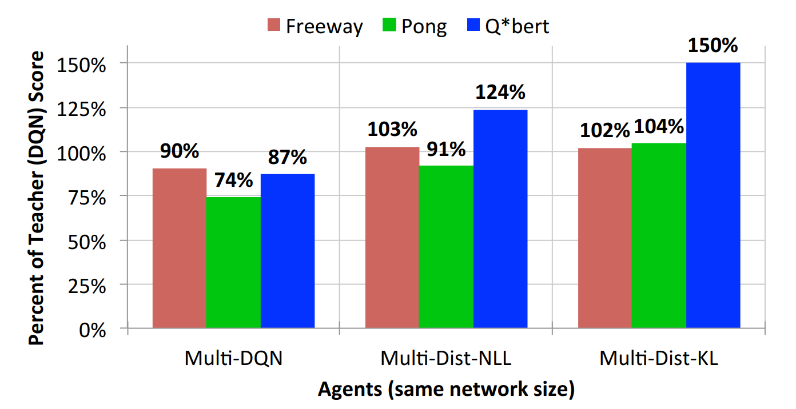
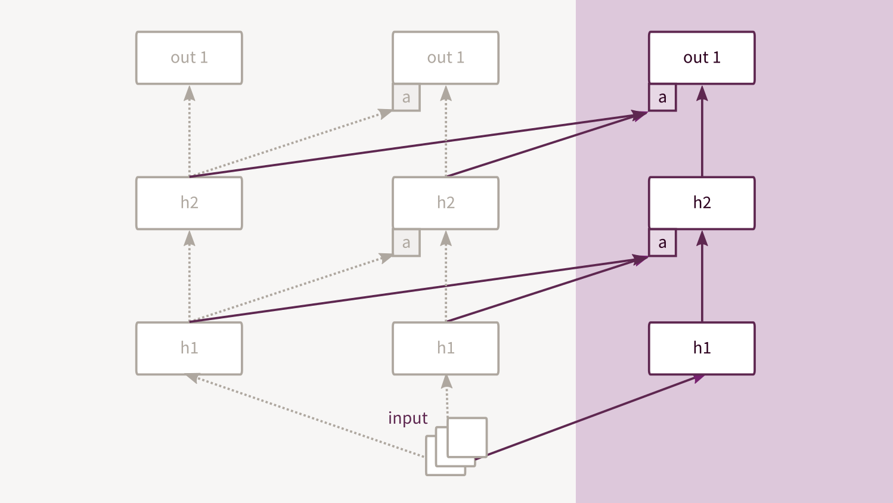

Continual Learningwith Neural Networks
The ability to learn new tasks in a sequential fashion while retaining the same level of performance on the previously learned tasks.
Plan for today:
- Motivation for Continual Learning
- Policy Distillation
- Progressive Neural Networks
- Overcoming Catastrophic Forgetting
Motivation (I):
- Training a single model on multiple objectives, sequentially.
- Transfer knowledge acquired across multiple tasks and without destroying the previously learned functions.
Motivation (II):
- Brain optimizes multiple loss functions:
"Cost functions in the brain are likely to be complex and to be arranged to vary across areas and over development."
Marblestone, 2016
- Measure of intelligence:
$\xi(\pi)=\sum_{\mu \in \mathcal{M}} 2^{-K(\mu)} V_{\mu}^{\pi}$.
Legg & Hutter, 2007
Policy Distillation
Rusu, 2016
- Uses supervised regression to train a target network to produce the same output distribution as the original network.
- Extract the policy of a reinforcement learning agent and train
a new network that performs at the expert level while being smaller
and more efficient.
Policy Distillation. Advantages
- Consolidation of ensembles into a single model.
- Stabilizes learning.
- Consolidation of multiple tasks into a single model.
Policy Distillation. Training Details
- $\mathcal N$ DQN experts learn $\mathcal N$ different games...
- ... and gather transitions in different memory buffers.
-
The student trains on these transitions, switching to a new task each episode.
Training Details. Distillation Loss.
Policy Distillation. Model
Policy Distillation. Results (I)

Policy Distillation. Results (II)
Policy Distillation. Limitation
-
It requires a reservoir of persistent training data for all tasks
- It requires training multiple models.
Progressive Neural Networks
Rusu, 2016
- Retain a pool of pretrained models throughout training...
- ... and learn lateral connections from these to extract useful features for the new task.
Progressive Networks. Advantages
- Explicit support for transfer learning.
- Richer compositionality in which prior knowledge can be integrated at each layer of the feature hierarchy.
Progressive Networks. Training Details
- Instantiate a new neural network (column) for each task being solved.
- Transfer is enabled via lateral connections to features of previously learned
columns using parametrized adapters.
Progressive Networks. Model

Overcoming Catastrophic Forgetting
Kirkpatrick, 2016
- Brings evidence that catastrophic forgetting is not an inevitable feature of connectionist models.
- Proposes a regularization technique called Elastic Weight Consolidation.
Elastic Weight Consolidation
- It is a penalty term added to the cost function that constrains the weights relevant to task $\mathcal A$ when
training on task $\mathcal B$.
- EWC can be described as on-line diagonalised Laplace approximation.
Huszar, [link]
Elastic Weight Consolidation
EWC ensures task $\mathcal A$ is remembered while training on task
$\mathcal B$. Training trajectories are illustrated in a schematic
parameter space, with parameter regions leading to good performance on
task $\mathcal A$ (gray) and on task $\mathcal B$ (cream color).
After learning the first task, the parameters are at $\theta^*_A$.
Elastic Weight Consolidation
- Neural networks, a probabilistic perspective:
$$\log p(\theta | \mathcal D) = \log p(\mathcal D | \theta)
+ \log p(\theta) - \log p(\mathcal D)$$
- How about multiple tasks?
$$\log p(\theta | \mathcal{D}_A, \mathcal{D}_B)
= \underbrace{\log p(\mathcal{D}_B|\theta)}_{\mathcal{-L}_B(\theta)}
+ \underbrace{\log p(\theta | \mathcal{D}_A)}_{??}
- \log p(\mathcal{D}_B)$$
- The posterior distribution contains information about which parameters are important for task $\mathcal A$ ...
- ... and it is also intractable.
Laplace Approximation
- We approximate the posterior with a Gaussian around its mode:
$$p(\bf\unicode[Times]{x3B8} | \mathcal D_A) \approx \frac{1}{Z_Q}
\times e^{-\frac{1}{2}
(\bf\unicode[Times]{x3B8} - \bf\unicode[Times]{x3B8}^*_A)^\intercal
\bf{H}(\bf\unicode[Times]{x3B8} - \bf\unicode[Times]{x3B8}^*_A)}$$
Deriving the EWC penalty
- With the Laplace Approximation:
$$p(\bf\unicode[Times]{x3B8} | \mathcal D_A) \approx \frac{1}{Z_Q}
\times e^{-\frac{1}{2}
(\bf\unicode[Times]{x3B8} - \bf\unicode[Times]{x3B8}^*_A)^\intercal
\bf{H}(\bf\unicode[Times]{x3B8} - \bf\unicode[Times]{x3B8}^*_A)}$$
- EWC penalty:
$$\begin{aligned}
\log p(\bf\unicode[Times]{x3B8} | \mathcal D_A)
& \approx -\frac{1}{2}
(\bf\unicode[Times]{x3B8} - \bf\unicode[Times]{x3B8}^*_A)^\intercal
\bf{H}(\bf\unicode[Times]{x3B8} - \bf\unicode[Times]{x3B8}^*_A) \\
& \approx \color{#f4d018}{ \sum_i -\frac{1}{2} \bf{H}_i
(\bf{\unicode[Times]{x3B8}}_i - \bf{\unicode[Times]{x3B8}}^*_{A,i})^2}
& \bf{H} \approx \text{diag}(\bf{H}) \\
\end{aligned}$$
Why Fisher?
- Why approximate the Hessian with the (empirical) Fisher
$ \bf{\bar F} = \sum_i
\nabla \mathcal{L}(\theta)_i \nabla \mathcal{L}(\theta)_i^\intercal$ ?
Martens, 2012
- Fisher can be computed with first order derivatives only.
- Near a minimum is equivalent with the Hessian. Pascanu, 2014
- And $\bf F = -\mathbb E[\bf H]$
- EWC loss function:
$$ \mathcal{L}(\theta) =
\mathcal{L}_B(\theta)
+ \color{#f4d018}{\sum_i \frac{\lambda}{2} \bf{F}_i (\theta_i - \theta^*_{A,i})^2}
$$
Results. Mnist (I)
Training curves for three random permutations A, B, and C. Only
EWC is capable of maintaining a high performance on old tasks, while
retaining the ability to learn new tasks.
Results. Mnist (II)
Average performance across all tasks, using EWC (red) or SGD with
dropout regularization (blue). The dashed line shows the performance
on a single task only.
Results. Mnist (III)
Similarity between the Fisher information matrices as a function of
network depth for two different amounts of permutation. Either a
small square of 8 × 8 pixels in the middle of the image is permuted
(gray) or a large square of 26 × 26 pixels is permuted (black).
Results. Atari (I)
Training schedule.
Results. Atari (II)
Total human-averaged scores for each method across all games.
Results. Memory life-time for random patterns
Log-log plot of the SNR for recalling the first pattern after observing
$t$ random patterns. If no penalty is applied (blue), the SNR decays as
$(n/t)^{0.5}$ only when $t$ is smaller than the number of synapses
$n = 1,000$ and then decays exponentially. When EWC is applied (red),
the decay takes a power-law form for all times.